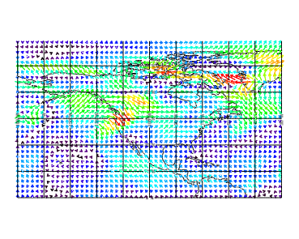

The VECTOR function allows you to draw vectors or wind barbs in a graphic. The following example displays global wind vector data over a global map with continental outlines.

The code shown below creates the graphic shown above. You can copy the entire block and paste it into the IDL command line to run it.
; Read the data.
RESTORE, FILEPATH('globalwinds.dat', SUBDIR=['examples','data'])
; Set up the map projection, grid, and continents.
mapimage = MAP('Equirectangular', $
LIMIT=[0,-180,89,-30])
cont = MAPCONTINENTS(/CURRENT)
; Display the vector data on top of the map.
vect = VECTOR(u, v, x, y, /OVERPLOT, $
RGB_TABLE=39, AUTO_COLOR=1)
| • | projection - defines the map projection to use. In this case, the Equirectangular projection. |
| • | LIMIT - specifies the boundaries of the map region (by minimum latitude, minimum longitude, maximum latitude, maximum longitude). In this example, the boundaries are the entire globe. |
| • | CURRENT - draws MAPCONTINENTS outline in the current graphic window. |
| • | U, V, X, Y - the data variables restored by the RESTORE procedure. |
| • | OVERPLOT - displays the data as an overlay in the current window. |
| • | RGB_TABLE - defines the color table used to display the image. If no color table is defined, this image displays in gray scale. |
| • | AUTO_COLOR - enables automatic coloring of vectors according to magnitude or direction. |
| • | Change Graphics Properties |
| • | Multiple Graphics in One Window |
| • | Saving Graphics |
| • | MAP |
| • | MAP_CONTINENTS Procedure |
| • | VECTOR |
| • | Graphics |
| • | Formatting IDL Graphics Symbols and LinesSurface with Contour Lines |